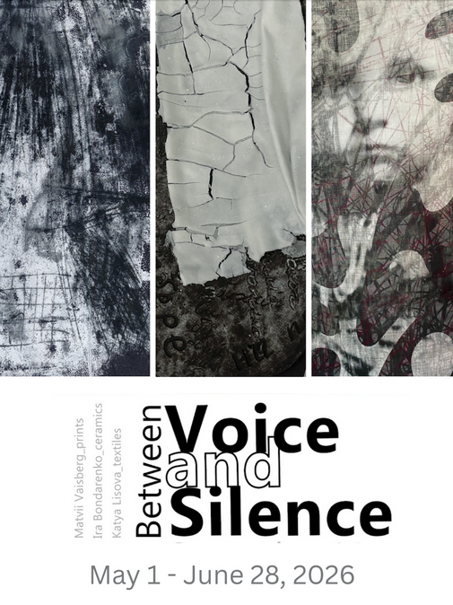

Between Voice and Silence In memory of Ukrainian poet Maksym Kryvtsov
The exhibition ‘Between Voice and Silence’ explores the role of empathy and humanity in times of crisis. Through their works, Ukrainian and American artists Katya Lisova (textiles), Matvii Vaisberg (prints), and Ira Bondarenko (ceramics) reflect on the limits and power of human agency in the face of overwhelming force. The value of humanity lies in its capacity to transcend adversity by embracing compassion and keeping empathy and human connection alive in the most oppressive darkness. The project examines this concept through the lens of works of Ukrainian artists and poets and emphasizes the role of ordinary people in building resilience and saving the state. The exhibition honors the poetry and life of Ukrainian fallen soldier Maksym Kryvtsov and, by drawing its title from one of his poems, “ In that space between Voice and Silence,” invites the audience to relate to this “in-between” moment where the power of the human heart reigns.
Ira Bondarenko
Katya Lisova
Matvii Vaisberg